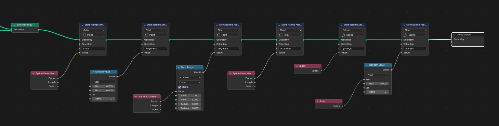
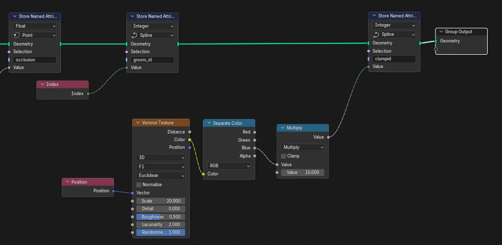
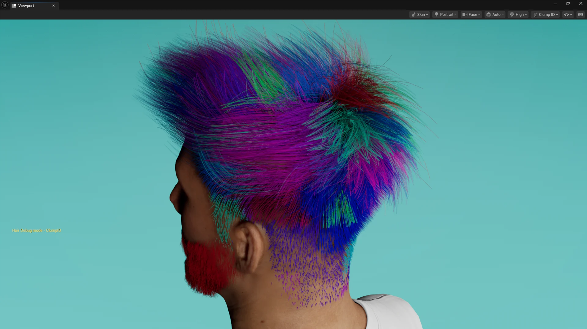

Welcome to GroomForge
For full documentation visit superhivemarket.com.
Update News
🚀 Version 1.5.0 Update
New Features & Improvements
- 🆕 Pre-Computed Guide Weights (Experimental)
A brand-new, independent export option that lets Unreal Engine reproduce Blender's own guide-to-strand interpolation instead of recalculating its own. When enabled, GroomForge computes each strand's 3 closest guides and their blend weights in Blender and bundles that data into the Alembic file.- Completely separate from the existing Guide checkbox — this is an extra option, not a replacement for it. Leave it off if you just want the standard Guide/Strand export.
- Off by default. Turn it on from its own "Advanced (Experimental)" box in the Groom Export panel.
- Only strands with a guide within the Guide Influence Radius get simulation weight — hair with no nearby guide stays still instead of being incorrectly pulled toward a distant, unrelated guide. This also means you can control exactly which region of hair simulates simply by choosing where you place guides.
- Two new sliders appear when enabled:
- Target Segment Length (default
0.2) — curves are resampled so each has roughly this segment length, instead of one fixed point count for every strand. Short strands automatically get fewer points, long strands get more. - Guide Influence Radius (default
0.002) — the maximum distance a guide can be from a strand root to influence it. Match this to your rig's scale (the default is tuned for MetaHuman-scale rigs, where the character armature is scaled to0.01). If too many strands end up with no simulation movement at all, raise this value.
Bug Fixes
- Fixed: Guide Influence Radius default was tuned for meter-scale rigs, causing nearly all strands to fall outside the radius (and lose simulation weight) on Unreal/MetaHuman-scale (centimeter) rigs. Default lowered to match that scale.
🚀 Version 1.4.0 Update
New Features & Improvements
-
🆕 Send to Unreal Engine (Beta)
A brand-new one-click bridge between Blender and a running Unreal Engine Editor. Instead of manually exporting an Alembic file and importing it in UE by hand, just click Send to Unreal Engine — GroomForge exports your hair and automatically creates the Groom asset inside UE for you, no file dialogs or manual import steps required.- Works when Blender and Unreal Engine are running on the same computer.
- Requires a one-time setup in UE: enable the Python Editor Script Plugin and turn on Enable Remote Execution in Editor Preferences (see the User Guide for the exact steps).
- You can choose the UE Folder and Asset Name directly from the Blender panel, so the imported Groom asset lands exactly where — and named however — you want.
- After the first successful send, repeated sends to the same UE session are much faster, since GroomForge remembers the connection for the rest of your Blender session.
-
🆕 Smarter, More Natural Clump Grouping
The auto-generated “clumpid” attribute (created by Fix & Output Connect) now groups strands by their actual 3D position (via a Voronoi pattern) instead of just their internal list order, so strands that are physically close together now share the same clump ID — giving a much more natural, bundled look. A new Clump Scale slider next to the Fix & Output Connect button lets you control how large or small the clumps are. -
🆕 Force UE Scale Option
A new Force UE Scale (100x) checkbox in Hair Rig Prop Creator lets you manually force the correct scale compensation for Unreal-style (centimeter) armatures, in case it isn't detected automatically.
Bug Fixes
- Fixed: Hair bones could be generated in the reversed direction when using Guide Curves in Hair Rig Prop Creator.
- Fixed: Generated hair meshes/tubes could come out 100x too large when targeting an Unreal-scaled (centimeter) Armature.
- Fixed: The auto-generated “roughness” attribute could end up as a single identical value across the whole hair system instead of varying naturally per strand.
- Fixed: Groom Export could fail unexpectedly in certain setups — export is now more robust and reliable.
- Fixed: Strand IDs (
groom_id) could collide with each other when exporting multiple hair objects together, which could cause inconsistent results. - Cleaned up a couple of unused leftover buttons in the UV Color Packer panel for a tidier UI.
- General performance improvement for the Wiggle Hair Sync bridge in scenes with many objects.
🚀 GroomForge PRO v1.3 Release Notes
[Bug Fix] Fixed 'Fix & Output Connect' Automation and Clump ID Issues
- Issue: Previously, when using the 'Fix' function to automatically generate the node setup, the
clumpidattribute failed to calculate or apply correctly to the strands. - Fix: Improved the internal logic of the
Fix & Output Connectfeature. The automatically generatedStore Named Attribute (clumpid)node now properly fetches theRandom Valuedata across the Spline domain and maintains a stable connection directly to theGroup Output. Hair clumping effects will now display accurately per strand.
💡 Advanced Styling Tips & Use Cases
Procedural Clumping via Voronoi Texture Masking
For advanced styling, explore creative setups beyond the default node setup—such as layering multiple clump attributes for complex braids, realistic flyaways, or stylized layering.
* Procedural Clumping: Instead of simple random values, try using a Voronoi Texture mapped to the strand positions to generate spatially clustered clump IDs.
* Realistic Clustering: By passing the texture color through a Separate Color node and scaling it with a Multiply math node, you can procedurally group hair strands based on their physical proximity. This creates much more realistic, natural-looking hair clumps and partings.

🎬 Showcase: Procedural Clumping in Action
Procedural Clumping via Voronoi Texture allows you to easily achieve realistic, engine-ready hair clustering.
* Advanced Spatial Clustering: By driving the clumpid attribute with a procedural Voronoi Texture, hair strands are automatically clustered based on their 3D proximity rather than simple random generation.
* Flawless Engine Integration: As shown in the Unreal Engine viewport debug mode, each distinct color seamlessly visualizes a procedural clump unit. This data-driven approach yields incredibly natural hair breaks, realistic partings, and high-fidelity clumping behavior without any manual grooming overhead.
* Production-Ready Efficiency: This setup bridges the gap between Blender's procedural generation and real-time engine shading, giving you complete pipeline control over complex hairstyles.

🚀 Version 1.2.0 Update
New Features & Improvements
-
🆕 Edge-to-Rig Generation
You can now generate professional rig structures directly from selected edges in Object Edit Mode. This allows for more flexible and custom skeleton layouts beyond standard curves. -
⚡ Enhanced Color UV Packing
The Color UV Pack engine has been overhauled for better precision and faster processing. It ensures UV islands are snapped to color blocks more accurately with significantly reduced calculation time. -
🎮 Unreal Engine Pipeline Optimization
Automatically generates UE-compatible attributes (UV Maps, Color Attributes, and Vertex Data) during hair card creation. This ensures a seamless transition to Unreal's hair shaders with pre-configured data such as Flow maps, Gradient groups, and Occlusion variations.
Bug Fixes & Optimization
- Improved internal logic for UV tile group distribution.
- Minor UI/UX refinements for the property panels.
🔄 Advanced Binding System
-
🆕 Hair Curve-to-Mesh Bind
A specialized solution to bind Hair Curves to mesh data. This ensures hair follows complex character movements perfectly, overcoming the native limitation where curves cannot be directly influenced by an Armature. -
🆕 Mesh-to-Rig Bind
Streamlined workflow to bind meshes to rigs (armatures). This feature optimizes the connection between your generated props and the skeletal system for stable animation.